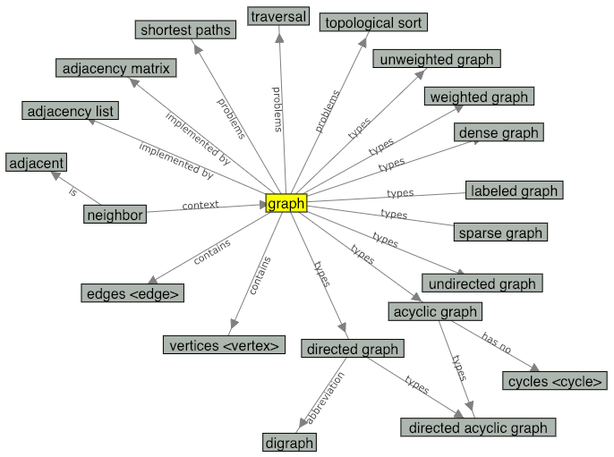

This is a still image of the concept map for the term
"graph". You can check the actual concept map on the
glossary page.

Which of the following are a type of graph data structure?
Look at these terms on the concept map.